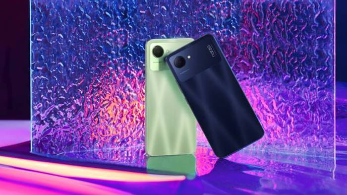

5.Vivo Y16
Vivo Y16 hadir dengan layar 6.51 Inch HD+ IPS Waterdrop. Di bawahnya, ada MediaTek Helio P35, yang dikombinasikan dengan RAM/ROM yang besar, mulai dari 3GB RAM/32GB ROM. Kapasitas ROM ini didukung dengan triple slot memori eksternal hingga 1TB.
Pada modul kamera, vivo Y16 menyematkan AI Triple Mode Camera dengan 13MP Main Camera, 2MP Macro Camera serta mode Bokeh. Sedangkan pada kamera depan, ada resolusi 5MP. HP sudah tersedia di pasar Indonesia dengan harga Rp 1.799.000.
Spesifikasi Vivo Y16
- Rilis: September 2022
- Network: 2G, 3G, 4G
- OS: Android 12 (Go edition)
- Chipset: Mediatek Helio P35
- CPU: Octa-core
- GPU: Mali G57
- RAM: 3 GB
- Memori: 32 GB
- Dimensi:163,9 x 75,5 x 8,2 mm dan 183 gram
- Layar: IPS LCD 6.51 inci dengan resolusi layar HD+
- Kamera Utama: 13 MP + 2 MP
- Kamera Depan: 5 Mp
- Baterai: 5000 mAh
- NFC: No
- Warna: Drizzling Gold dan Stellar Black
- Harga: Mulai dari Rp 1.799.000.
6. Realme C30

HP harga 1 jutaan selanjutnya adalah Realme C30 yang mengusung layar IPS LCD berukuran 6.5 inci dengan resolusi layar 720 x 1600 piksel. HP ini ditenagai chipset Unisoc T612 yang bertenaga.
Dari sektor memori, HP 1 jutaan terbaik ini ni disokong RAM dan memori dengan dua pilihan yaitu 2+32GB dan 4+64GB serta mendukung kartu memori eksternal hingga 1TB. Baterai HP 1 jutaan ini berkapasitas 5000mAh yang diklaim mampu standby 45 hari.
Mengenai kamera, rekomendasi HP harga 1 jutaan ini hadir dengan AI Camera 8MP dan kamera selfie 5MP AI Beauty Selfie Camera di bagian depan. Harga HP murah 1 jutaan ini adalah Rp 1.245.000 untuk RAM 2 GB dan memori 32 GB, serta Rp 1.349.000 untuk RAM 4 GB dan RAM 64 GB.
Spesifikasi Realmi C30
- Rilis: Juli 2022
- Network: 2G, 3G, 4G
- OS: Android 11 Realmi UI Go
- Chipset: Unisoc Tiger T612 (12 nm)
- CPU: Octa-core (2×1.8 GHz Cortex-A75 & 6×1.8 GHz Cortex-A55)
- GPU: Mali G57
- RAM: 2 GB, 4 GB
- Memori: 32, 64 GB
- Dimensi: 164.1 x 75.6 x 8.5 mm (6.46 x 2.98 x 0.33 in), 182 gram
- Layar: IPS LCD 6.5 inci dengan resolusi layar 720 x 1600 piksel
- Kamera Utama: 8 MP
- Kamera Depan: 5 Mp
- Baterai: 5000 mAh
- NFC: No
- Warna: Lake Blue, Bamboo Green
- Harga:Rp 1.245.000 (2 GB/32 GB), Rp 1.349.000 (4 GB/64 GB).